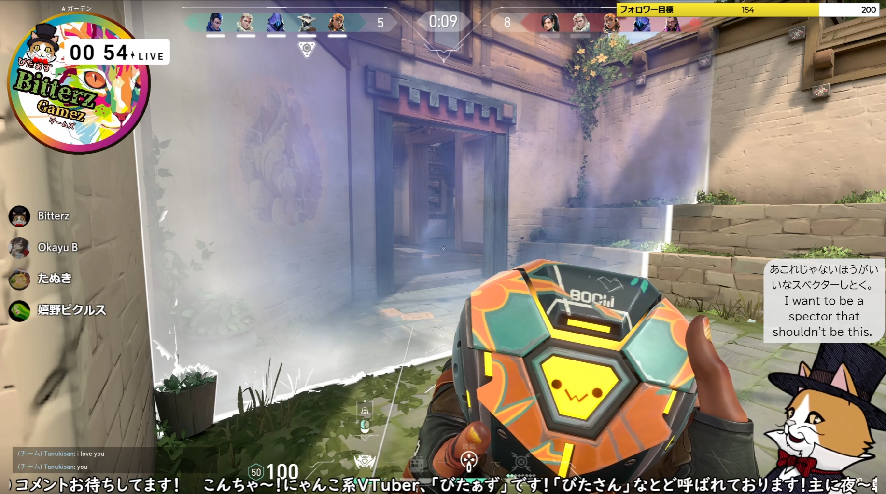

利用者の声
ユーザさんから寄せられた活用事例をご紹介します
活用事例(2025)¶
海外交流¶
はっさくさん¶
■一言コメント
わんコメと併用して利用しています。普段は雑談を交えながらのゲーム配信が中心です。インドネシアのリスナーさんが来てくださったことをきっかけに、海外の方ともコミュニケーションが取れるよう導入しました。
ゆかコネNEOを導入したことで、多言語の同時翻訳が可能になり、英語・インドネシア語・日本語が入り混じってもスムーズなやりとりができています。リスナーさん同士の交流も配信画面上で完結できるのがとても魅力的ですし、アーカイブの確認もより楽しくなりました！
■新規ユーザさんへ
ゆかコネNEOがあれば言語の壁がなくなります！自分はまだまだ使いこなせてはいませんが、活用の幅が広く、汎用性も高いためとてもおすすめです！
綿雨とわさん¶
■一言コメント
ゲームや雑談配信をしている毒親育ちVTuberです！海外の視聴者さんがおすすめから来てくれた際に英語翻訳を導入しました。おかげでしばらく見に来てくださり、ゲームのアドバイスなど翻訳が大活躍でした！見やすいように使っています
■新規ユーザさんへ
設定が簡単になったので、英語が不得意な人こそぜひ使ってほしいです！わからないことはディスコードで簡単に聞けるのでぜひ！
サミサンさん¶
■一言コメント
ゲーム配信をしているVtuberサミサンです。Twichで配信しております。 自分の喋る言葉を英語でもリアルタイムで翻訳表示されると面白いなと感じ、色々調べていた所でゆかコネを知りました。 自分がリアルタイムで話す言葉と翻訳英語が字幕として配信上に表示されるように設定しています。（やり方がとても簡単で助かりました）
良かったことはつい先日の配信上なんですが、海外の方が観に来てくださって定期的に英語でコメントしてくれてたんです。 向こうは日本語を話せないし、私も英語がほぼわからないのですが、ゆかコネさんの翻訳のおかげでなんとか交流できました。 なんと６～７時間も(笑) とても楽しい時間でした。
■新規ユーザさんへ
少しでも興味が沸いたならまずは触って色々試してみてほしいです。他アプリとの連携もあり、より楽しく幅広い使い方ができるようになります。是非とも！
イベント活用¶
ハナシチさん¶
ハナシチさん :web:
■一言コメント
初めまして。郡山市でポケモンカードのイベントを開催しているハナシチと申します。 私は要約筆記者としても活動しています。
ポケモンカードのイベントで聴覚障害を持っているプレーヤーさんとDiscordを使用してリモートで対戦しました。 聴者側の声をゆかコネNEOで字幕化（ブラウザ経由）し、OBSと併用して配信しました。
こちら（聴者）側の設定は私が慣れているので簡単にでき、実際利用した方も字幕があってわかりやすかったと感想いただきました。 障害者側に設定を勧めるのは難しいと感じましたが、聴者側ができる合理的配慮のひとつとしてとても役に立ちました。 次はUDトークとの連携を試してみたいです。
■新規ユーザさんへ
使い方は配信に限りません。工夫次第でコミュニケーションが誰とでも取れる素晴らしいツールです。まずは初めの一歩、踏み出してみましょう！
国を超えて¶
Karin∞17さん¶
■一言コメント
英語で配信活動をしているENVtuberのKarin∞17です。リスナーさんの９割が日本語ネイティブではない方たちです。 日本語配信を解禁するにあたって、既存のファンの方たちが言語のせいで楽しめないということがないようにしたいと考えていました。
リアルタイムで同時翻訳をしてくれるおかげでそんな言語の壁を壊せている気がします。 文字を追うことさえも楽しんでもらえたらという気持ちで、翻訳は美少女ゲーム風の配置にしてみましたｗ
■新規ユーザさんへ
いろんな人へ自分の考えや好きなものを届けたい！という人にはぴったりだと思います。
UDトーク併用¶
おかずやさん¶
■一言コメント
Twitchでハースストーンとういうゲームをメインに配信をしている「おかずや」と申します。 UDトークとゆかコネNEOを組み合わせることで、リアルタイム翻訳字幕を立ち絵に表示し、配信中の会話をより多くの人に届けられるよう工夫しています。
配信しているゲームは海外ユーザーも多く、海外からのコメントをいただくこともあります。海外のコメント内容はこちらで翻訳すればすぐ理解できますが、こちらの発言も日本語のままリアルタイムで字幕が翻訳表示されることで、自然なコミュニケーションが成立しやすくなり、とても助かっています。 ゲーム専用単語も辞書登録しておけばより海外ユーザーとのやりとりが分かりやすくなって便利です。
■新規ユーザさんへ
ゆかコネNEOは、話している内容をリアルタイムで文字にしてくれるので、配信や動画に「わかりやすさ」と「親しみやすさ」をプラスできるツールです。
わたしの配信では、UDトークと連携して翻訳字幕を表示しているのですが、海外の方から「内容が伝わって嬉しい！」という声をもらえたり、 日本語リスナーからも「電車の中で音なしでも内容がわかって助かる」といった感想をいただけました。
字幕があることで、より多くの人に見てもらえるきっかけにもなっています。
活用事例(2024)¶
多言語の翻訳¶
ゆきひこさん¶
** 一言コメント **
配信歴１年の初心者です。 僕は日本語しかできませんが、"ゆかコネNeo" と "わんコメ" を連携させることで、海外の方と意思疎通ができて本当に助かっています！ ゆかコネNeoは、他ソフトとの連携機能が充実しているので、自分好みの配信スタイルを簡単に創ることができます。 動画では "Firebot" というツールを使用したタイムキーパーの作り方を説明しています。
寝住ようかんさん¶
** 一言コメント **
2024年3月からTwitchで配信を始めた寝住ようかんと申します。 色々な翻訳ツールを試してみたところゆかコネNEOさんのツールが一番使いやすかったのでこちらを使用させていただきました！ 自分自身英語は得意ではないので代わりに翻訳してくれて凄く助かっています✨ 私が話してからの音声認識のスピードも速くて表示スピードも速く正確なのでこれからも重宝していこうと思います！
カバ子さん¶
** 一言コメント **
気が向いた時にひっそりとゲーム実況配信しています。 ゆかコネの字幕/翻訳のおかげで、非日本語ネイティブな方ともコミュニケーションでき、何度も見に来てくれるリスナーの方ができました。 近頃はVMagicMirrorのモーション再生機能と、ゆかコネの「ホットキー」プラグインを組み合わせて、特定のキーワードでアバターがリアクションをするようにしています。 PC負荷を抑えたいのでVMMではフェイストラッカーを使用しないようにしており、ゲーム中にショートカットキーを押すのも難しいのでこの使用法で表情を補っています。
clea_vtuberさん¶
** 一言コメント **
ゆかコネ公式ガイド、０期アンバサダーのcleaです。 リアルタイム翻訳字幕ツール用いて「文字を必要とされる人たちにエンタメを届けたい」をモットーに活動しているよ。 インドネシアの人がこられたので、ゆかコネとわんコメを使って双方感のやり取りが円滑にできました。 もっとこういう世界を増やしたいですね。
だばちゃんさん¶
活用事例(2023)¶
多言語翻訳¶
ぱきちさん¶
** 一言コメント **
配信歴５年目のかっぱの「ぱきち」です。
ゆかコネ歴は４年目かな？になりました！お世話になってます(∀｀*ゞ)ｴﾍﾍ
今や私の配信には無くてはならない存在！
ゆかコネのお陰でお友達がいっぱい出来ました！
最近「わんコメ」も併用しているので、配信画面はもうわちゃわちゃしてますし、コメント欄は英語かスペイン語かポルトガル語で埋まっています。 みんなにもっと「ゆかコネ」を使って貰いたいし、もっと世界に向けて配信して欲しいっス！ 草葉の陰から応援しております|дﾟ)ﾁﾗｯ
ワンポイント一言 「世界中の人たちとお友達になれる魔法のツール！」
ゆきひこさん¶
** 一言コメント **
2023年3月から Twitch で配信を始めたばかりの初心者です。
僕自身は日本語しかできないので、このツールがなかったら海外の方と意思疎通はできませんし、ゲーム配信をしてみようと考えることもなかったと思います。 ゆかコネNEO と TwiChaDash を使用して、世界中にフレンドの輪を広げていきたいです。
わんコメ併用¶
びたぁずさん¶

** 一言コメント **
twitchで配信始めて約1年、にゃんこ系Vtuberのびたぁず（Bitterz）と申します。
もともと【びたぁず】は特にキャラ設定をせずにゲーム配信をしていたのですが、 どうにか集客を増やす方法はないか？と模索していくうちに、 字幕を付けて外国人の視聴者にも目を付けたことをきっかけに、ゆかりネットコネクターに出会いました。
実は、上に紹介上がっておられる「ぱきち」さんの配信や,ゆかコネ導入紹介HPを見つけたことを きっかけにゆかりネットコネクターの導入をしております。たまに配信にお邪魔したりしています。
現在は【ゆかコネneo】を運用しています。
【わんコメ】に関してはまださわり程度しか導入できておりませんので、今後いろいろ試したり改善していきたいと考えております。
夫婦で配信しているサブチャンネル【びたぁずはうす】も運営しており、こちらではゆかコネneoでどうにか二人分の字幕を何とかうまく分けて出力しようとテスト中ですが、 いつかきれいに二人分を出力できたらいいなとトライしております！！
外国の方とも友達ができ、徐々にフレンドの枠を広げているところです！！ ぜひゆかコネneoの紹介枠につかっていただければと思います！
しゃくら / Shakuraさん¶
湧浦カランさん¶
** 一言コメント **
海外での展開がメインのメックウォーリアというロボットゲームをメインコンテツとして配信しており、コメントに英語圏の方が来てくださるのでその際に受け答えにとても重宝しています。
配信の時にはこんな感じで日本語字幕と英語字幕を併用しています。視認性を維持するため、字幕は日本語・英語に絞っており、見やすい画面配置になっていると自負しています！